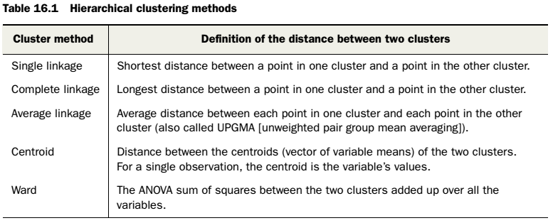
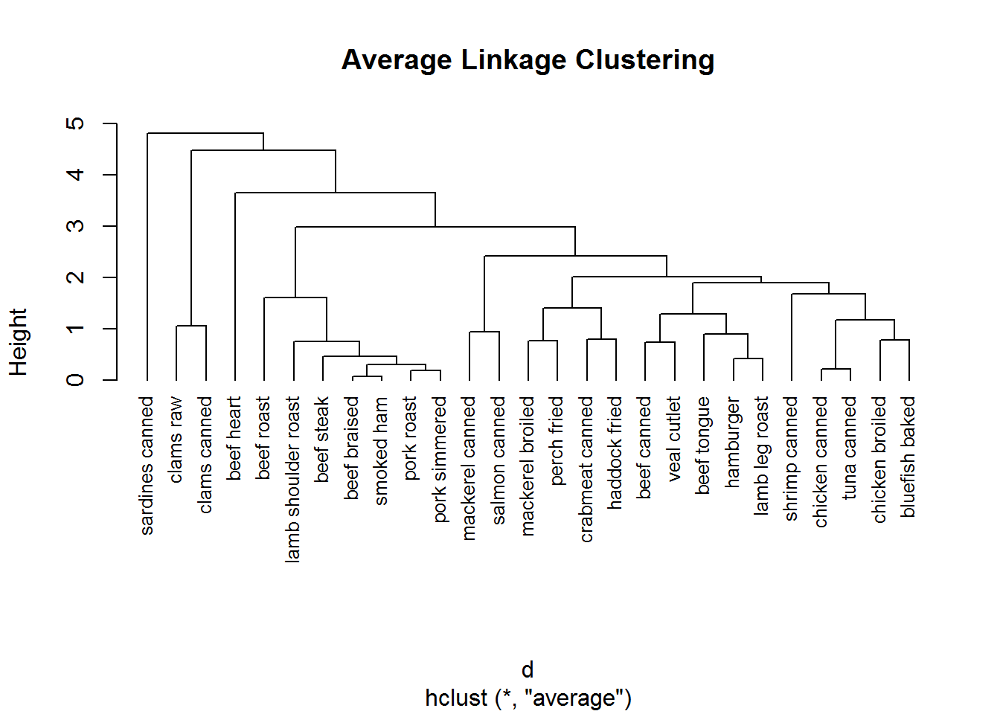
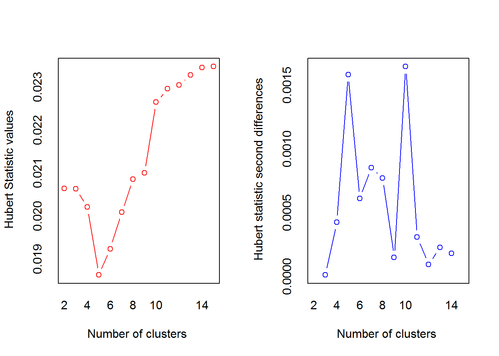
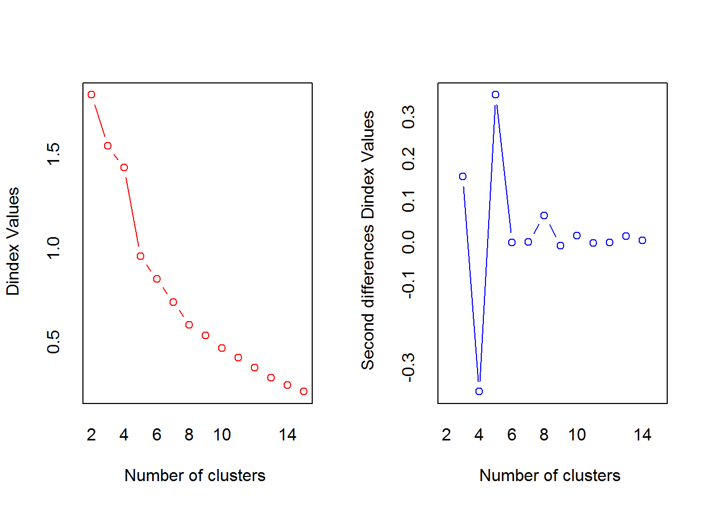
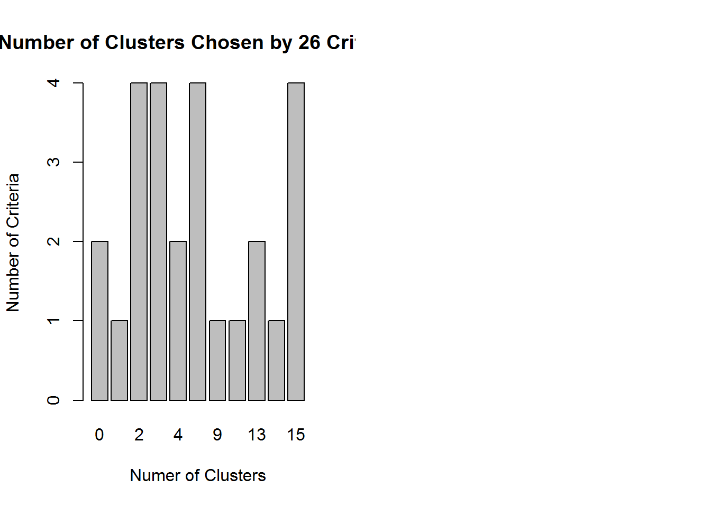
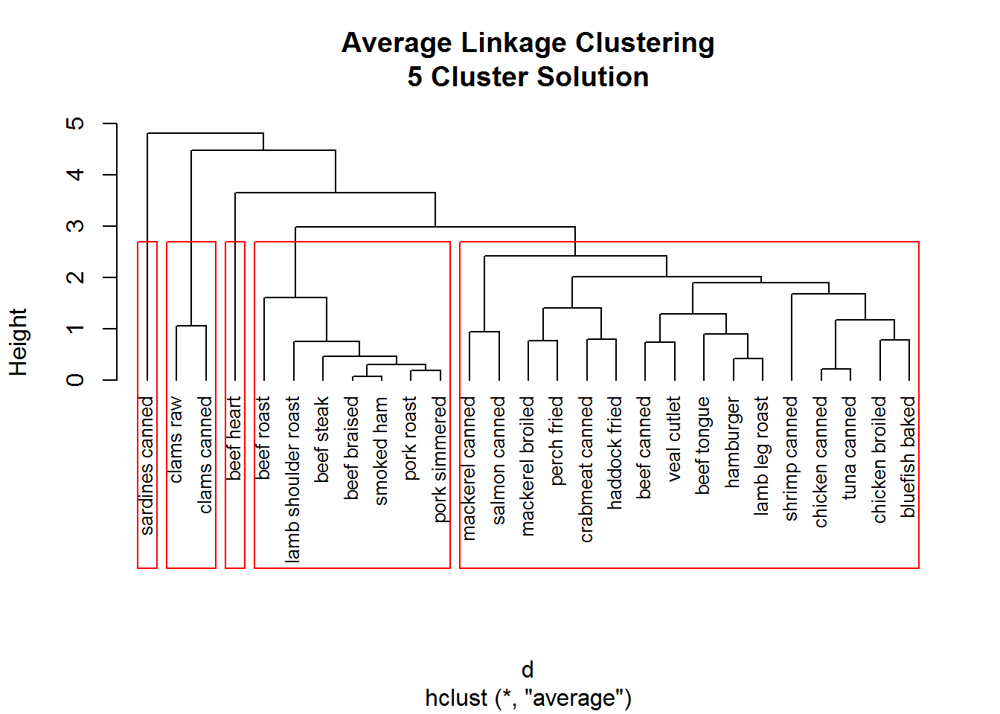

3. Hierachical clustering¶
3.1. Giới thiệu¶
Cluster analysis (phân tích nhóm) là kỹ thuật phân tích điểm tương đồng giữa các đối tượng trong group. Ví dụ: Phân nhóm khách hàng, phân nhóm sản phẩm…
Các bước trong phân tích cluster:
- Lựa chọn thuộc tính. Đây là bước quan trọng nhất của phân tích cluster, giúp xác định chính xác việc phân tích nhóm
- Scale dữ liệu: Scale về mean hoặc normalization để loại bỏ ảnh hưởng các biến gây nhiễu. Có 3 các scale như sau:
- Normalization: x-mean(x)/sd(x)
- Scale theo tỷ lệ: x/max(x)
- x-mean(x)/mad(x)
- Loại bỏ outlier
- Tính khoảng cách giữa các điểm: Euclide, maximum…
- Lựa chọn thuật toán
- Lựa chọn kết quả: Lựa chọn số cluster mong muốn
- Vizualize kết quả
- Trình bày và giải thích
- Đánh giá lại kết quả: Đánh giá các cluster có ý nghĩa thực tế không? Mô hình có nhạy cảm với các phương pháp khác nhau không?
Tính toán khoảng cách giữa các điểm: Thường dùng dành cho biến số, nếu có cả factor, sử dụng cluster::daisy
data(nutrient, package="flexclust")
nutrient[1:4,]
## energy protein fat calcium iron
## BEEF BRAISED 340 20 28 9 2.6
## HAMBURGER 245 21 17 9 2.7
## BEEF ROAST 420 15 39 7 2.0
## BEEF STEAK 375 19 32 9 2.6
#Tính khoảng cách giữa các điểm
dist(nutrient[1:4,])
## BEEF BRAISED HAMBURGER BEEF ROAST
## HAMBURGER 95.64000
## BEEF ROAST 80.93429 176.49218
## BEEF STEAK 35.24202 130.87784 45.76418
#Daisy
library(cluster)
daisy(iris[1:5,])
## Dissimilarities :
## 1 2 3 4
## 2 0.24666667
## 3 0.36000000 0.24666667
## 4 0.43333333 0.25333333 0.27333333
## 5 0.07333333 0.24000000 0.35333333 0.42666667
##
## Metric : mixed ; Types = I, I, I, I, N
## Number of objects : 5
3.2. Hierarchical cluster analysis¶
Thuật toán diễn ra như sau
- Xác định mỗi quan sát là 1 cluster
- Tính khoảng cách giữa các quan sát
- Nhóm 2 cluster có khoảng cách gần nhất thành 1 cluster mới
- Lặp lại bước 2,3 cho đến khi tất cả các quan sát hợp lại thành 1 cluster
Các cách tính khoảng cách giữa các cluster thông dụng nhất như sau:

Khi phân tích, có 2 câu hỏi lớn:
- Các đối tượng phân nhóm với nhau như thế nào? Ta có thể sử dụng gói cluster::hclust
- Nên phân thành bao nhiêu nhóm (cluster)? Sử dụng NbClust, tuy nhiên, với mỗi tiêu chí, các kết quả lại có thể đưa ra khác nhau
data(nutrient, package = "flexclust")
#Chuyển sang tên in thường
row.names(nutrient) <- tolower(row.names(nutrient))
#Scale dữ liệu
nutrient.scaled <- scale(nutrient)
#Tính khoảng cách
d <- dist(nutrient.scaled)
#Tính cluster
fit.average <- hclust(d, method = "average")
#Vizualize
plot(fit.average,
hang = -1,
#Điều chỉnh vị trí của text
cex = 0.8,
#Kích cỡ của text
main = "Average Linkage Clustering")

#Xác định số lượng cluster
library(NbClust)
nc <- NbClust(nutrient.scaled,
distance = "euclidean",
min.nc = 2,
max.nc = 15,
method = "average")

## *** : The Hubert index is a graphical method of determining the number of clusters.
## In the plot of Hubert index, we seek a significant knee that corresponds to a
## significant increase of the value of the measure i.e the significant peak in Hubert
## index second differences plot.
##

## *** : The D index is a graphical method of determining the number of clusters.
## In the plot of D index, we seek a significant knee (the significant peak in Dindex
## second differences plot) that corresponds to a significant increase of the value of
## the measure.
##
## *******************************************************************
## * Among all indices:
## * 4 proposed 2 as the best number of clusters
## * 4 proposed 3 as the best number of clusters
## * 2 proposed 4 as the best number of clusters
## * 4 proposed 5 as the best number of clusters
## * 1 proposed 9 as the best number of clusters
## * 1 proposed 10 as the best number of clusters
## * 2 proposed 13 as the best number of clusters
## * 1 proposed 14 as the best number of clusters
## * 4 proposed 15 as the best number of clusters
##
## ***** Conclusion *****
##
## * According to the majority rule, the best number of clusters is 2
##
##
## *******************************************************************
table(nc$Best.n[1, ])
##
## 0 1 2 3 4 5 9 10 13 14 15
## 2 1 4 4 2 4 1 1 2 1 4
barplot(table(nc$Best.n[1, ]),
xlab = "Numer of Clusters",
ylab = "Number of Criteria",
main = "Number of Clusters Chosen by 26 Criteria")
#Lựa chọn 5 cluster
par(mfrow = c(1,1))

plot(fit.average,
hang = -1,
cex = .8,
main = "Average Linkage Clustering\n5 Cluster Solution")
rect.hclust(fit.average, k = 5)

Lưu ý: Phân nhóm theo chiều dọc chỉ nên áp dụng với số lượng quan sát không quá lớn.
3.3. Tài liệu tham khảo¶
- R in Action